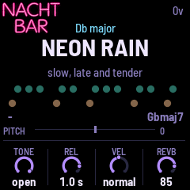
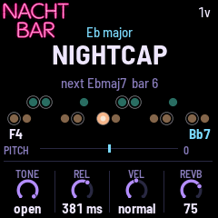
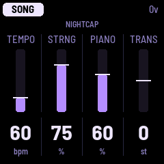
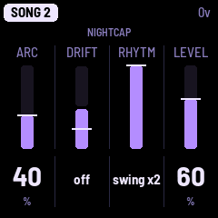
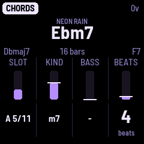
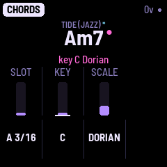
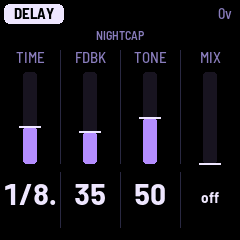

FM-1 NACHTBAR manual
The FM-1 NACHTBAR ("night bar") is firmware for the M-VAVE FM-1: a sampled tenor saxophone, played one note at a time from the FM-1's keys or a MIDI keyboard, over a backing that plays itself: soft strings on the tune's chords, a high sampled piano playing short gestures on them, and a quiet drummer with brushes. The theme is a night bar: a slow, romantic saxophone and some jazzy tunes. It is a sibling of NACHTFAHRT; it was first called NIGHT SAX.
Status. In development: a nightly test build, not a release. This manual describes the firmware as it is now (the nightly).
1 What it is
- The sax: a tenor saxophone recorded by Cranky Man: eight notes a minor third apart, each a recorded attack and a loop. One note at a time, as hard as it is played; keys held together slur. Its release is 381 ms in every tune but NEON RAIN (1.0 s).
- The backing: the strings (from NACHTFAHRT) on the tune's chords, a high piano (two notes of a sampled grand) playing short gestures, and a drummer playing one of eight patterns (a rim click, a brush stroke, a ride cymbal and a stick on a snare, the sticky snare, recorded by Cranky Man; a brush tap synthesised). All three go through the delay and the reverb; the sax's EQ and WIDTH are the sax's only.
- The tunes are the presets: twenty-one of them, each with its chords, key and scale, tempo, levels, sax sound, reverb and rhythm. They play forever: a chart loops (some with a second part), a walk picks its chords as it goes, a drone holds one chord. The slow arc and the key drift change a tune over minutes. A tune's chords can be changed on the Chords page (EDIT) and kept in a user preset.
- The snap: the sax snaps to the tune's scale, so every key you press is in it.

2 Getting started
- Switch the FM-1 on. The song starts while the launch screen shows: it plays from power-on.
- Turn PRESET to pick a tune. Its chords, key, tempo and rhythm load at once; a song playing goes on from the new tune's first chord.
- Play. The keys (or a MIDI keyboard) play the sax; whatever you press snaps to the tune's scale.
- PLAY stops the song (and starts it again from its first chord). REC tapped holds the chord sounding.
The controls at a glance (each is described in its section):
| Control | What it does |
|---|---|
| PLAY | Stops the song; again, starts it from its first chord (section 4). Blinks while a chord is held. |
| REC | Tapped while the song plays: holds the chord sounding; tapped again, the song goes on (section 4). |
| EDIT | Tapped: the Chords page; tapped again, back (section 5). Held a second: the next chord at once. |
| HOME | The sax's page (section 8). Held a second: the tune back as it loads. |
| ARP | The Song page; again, the second Song page (section 4). |
| ENV, LFO, FX, SEQ, GLO | The sax's pages: Sound, EQ, Reverb and Delay, Scale, Setup and Play (section 10). |
| SAVE | The Save page; again, the tune stored in a user preset (section 12). |
| SEL | On the Chords page: its knobs the chord's or the key mark's (section 5); elsewhere nothing. |
| OCT− / OCT+ | The keys an octave down / up (section 9). |
| PRESET | The tune: the twenty-one, then USER 1 to USER 8, round (section 3). |
| SELECT | The reverb's MIX, on any page. |
| ALGORITHM | On the Chords page, the chord a semitone a detent; elsewhere nothing. |
| MASTER | The output level. |
| K1 to K4 | The four values on the page shown. |

3 The tunes
PRESET steps through them in this order, then USER 1 to USER 8, and round: past USER 8 NEON RAIN again, back from NEON RAIN USER 8. "Beats" is the beats a bar; "Rhythm" and "ARC" are what the tune starts with (section 4). Every tune starts with STRNG 75, PIANO 60 (Last Call: 40), LEVEL 60, the reverb at Church with MIX 85 but in fifteen tunes, and the delay's MIX off but in five tunes (both under the table).
| Tune | Key | Beats | BPM | How it moves | Rhythm | ARC |
|---|---|---|---|---|---|---|
| NEON RAIN | Db major | 4 | 53 | chart, 16 bars | none | 30 |
| FIRST LIGHT | A Dorian | 4 | 67 | two parts, 8 + 6 bars, B every 2nd pass | brush | 30 |
| BACK ALLEY | E minor | 4 | 110 | chart, 8 bars, the bass on E throughout | br+rim | 40 |
| VELVET ROOM | D minor | 4 | 66 | two parts, 16 + 24 bars, B every 2nd pass | bossa | 40 |
| OLD FLAME | F# minor | 4 | 64 | chart, 8 bars | bossa | 30 |
| CANDLELIGHT | D major | 3 | 69 | two parts, 16 + 4 bars, B every 3rd pass | none | 30 |
| UNSEEN MAN | Db major | 6 | 83 | two parts, 8 + 8 bars, B every 2nd pass | none | 40 |
| ROYAL ROAD | Eb major | 4 | 66 | two parts, 8 + 8 bars, B every 3rd pass | brush | 30 |
| DORIAN NIGHT | D Dorian | 4 | 72 | chart, 4 bars: Dm7, G7 | swing | 40 |
| BLUES HOUR | C minor | 4 | 60 | chart, a 12-bar minor blues | swing x2 | 30 |
| LULLABY | F major | 4 | 56 | chart, 4 bars | sweep | 30 |
| WALTZ | G major | 3 | 80 | chart, 8 bars | brush | 30 |
| SUS DRIFT | A Mixolydian | 4 | 50 | chart, 8 bars; drifts every 4 passes | none | 40 |
| AFTER HOURS | Bb Dorian | 4 | 72 | walk, wandering; drifts every 32 bars | swing | 50 |
| LAST CALL | C minor | 4 | 56 | drone: Cm7, a new voicing every 4 bars | sweep | 60 |
| NIGHTCAP | Eb major | 4 | 60 | walk, leaning to ii-V-I | swing x2 | 40 |
| BEACH (JAZZ) | F major | 4 | 120 | two parts, 8 + 16 bars, B every 3rd pass | bossa | 35 |
| TIDE (JAZZ) | D major | 4 | 96 | two parts, 12 + 8 bars, B every 3rd pass | bossa | 40 |
| COLD (JAZZ) | D minor | 4 | 88 | two parts, 16 + 16 bars, B every 2nd pass | bossa | 30 |
| HILL (JAZZ) | C major | 4 | 92 | two parts, 16 + 18 bars, B every 2nd pass | bossa | 30 |
| ONCE (JAZZ) | D minor | 4 | 90 | chart, 28 bars | bossa | 35 |
Fifteen tunes start with their own reverb MIX (section 10): FIRST LIGHT 71, BACK ALLEY 65, VELVET ROOM 70, OLD FLAME 71, BLUES HOUR 35, LULLABY 75, WALTZ 60, AFTER HOURS 65, LAST CALL 75, NIGHTCAP 75, and the last five 50. Five tunes start with the delay on (TIME, FDBK, TONE, MIX; section 10): FIRST LIGHT 1/4., 53, 50, 90; BACK ALLEY 1/8., 100, 0, 80; VELVET ROOM 1/4, 70, 100, 80; UNSEEN MAN 1/4., 63, 50, 73; SUS DRIFT 1/8, 95, 0, 66. VELVET ROOM's sax also glides (GLIDE 50 ms), NEON RAIN's has a longer release (1.0 s), and BEACH (JAZZ)'s sax is darker and longer (TONE 30, REL 693 ms).
The first seven follow the chords of pieces by others, under names of their own; only the chords are used (the melody is yours; NEON RAIN charted by Cranky Man, the other six read from files he supplied: MIDI files, UNSEEN MAN a transcription of the recording):
- NEON RAIN: after the chords of Love Theme (Vangelis, Blade Runner).
- FIRST LIGHT: after the chords of Songbird (Kenny G).
- BACK ALLEY: after the chords of Lily Was Here (David A. Stewart, featuring Candy Dulfer).
- VELVET ROOM: after the chords of Smooth Operator (Sade), slowed to a ballad.
- OLD FLAME: after the chords of Europa (Carlos Santana and Tom Coster; the file follows Gato Barbieri's version).
- CANDLELIGHT: after the chords of Hymne (Vangelis).
- UNSEEN MAN: after the chords of To the Unknown Man (Vangelis), in its key; it comes seventh, after the other five, so the first two tunes are not both in Db.
The last five follow the chords of pieces by Antonio Carlos Jobim, read from chord charts Cranky Man supplied (not in the repository), the richer chords played plainer (a 9th, 13th, 7#11, 7b13 or 7#5 as a 7; 7b9b5 as 7b9; maj7#11 as maj7). They are harder to play over than the other tunes, so each is named with one word and (JAZZ):
- BEACH (JAZZ): after the chords of The Girl from Ipanema; its bridge moves to F# and back. Key marks in the bridge: F# major (F#maj7), F# minor (F#m7), G minor (Gm7), F major (Am7).
- TIDE (JAZZ): after the chords of Wave; two-beat chords end each A. Key marks: D Dorian at A's Dm7 (each A starts in D major); in B, F major (Gm7/Bb), Eb major (Fm7/Ab), D major (A7b9).
- COLD (JAZZ): after the chords of How Insensitive; D minor throughout.
- HILL (JAZZ): after the chords of Corcovado (its two parts are the chart's A B and A C; the last chord, C6, left out: the tune loops). Key marks in both parts: F major (Gm7), Eb major (Fm7), C major (Em7).
- ONCE (JAZZ): after the chords of Once I Loved (the form once, without its repeat). Key marks: Eb major (Fm7), D minor (Em7b5), D major (Dmaj7), C major (G7), Bb major (F7), D minor (Bdim7).
The FM-1 NACHTBAR is not connected with, endorsed by or supported by any of these artists, nor by Antonio Carlos Jobim, his heirs or his publishers. The other nine are plain progressions of their styles.
How a tune moves:
- A chart loops its chords. Two parts: a second part, B, plays in place of every 2nd pass (A B A B) or every 3rd (A A B A A B). HOME shows the part and the bar in it ("A 3/8", "B 1/8").
- A walk has no chart: it picks each chord as it goes, one ahead (so the next chord is always shown), a seventh chord on a degree of the scale, two bars each, never the same twice running and never a diminished chord. AFTER HOURS wanders and seldom goes home; NIGHTCAP leans on ii-V-I. The bar count goes on ("bar 37"). The walk is NACHTFAHRT's (NIGHTCAP's jazz leaning is this firmware's own).
- A drone (LAST CALL) holds one chord; every 4 bars the strings take another voicing of it.
- Some chords sound notes outside the tune's scale (Neon Rain's, Blues Hour's G7, Velvet Room's chorus, Old Flame's C#7): the sax's snap stays on the tune's scale.
4 The song's controls
- PLAY stops the song: the strings fade out over about 2.5 s, the piano's last notes ring out, the drums fade. PLAY again starts it from its first chord (a walk from its home chord).
- REC tapped, while the song plays, holds the chord sounding: the song waits on it as long as you like (HOME shows HELD, the header HOLD; REC is lit and PLAY blinks, as for a pause); the piano and the drummer start nothing new. Tap REC again and the song goes on with the next chord. EDIT held a second moves to the next chord at once, held or not (on the drone: its next voicing). A hold stays on through a tune change: the new tune waits on its first chord.
- EDIT tapped opens the Chords page, where the tune's chords are changed (section 5).
- PRESET loads a tune: its song and its chords, TEMPO, STRNG, PIANO, TRANS (0 in every tune), ARC, DRIFT, RHYTM and LEVEL, the sax's sound, reverb and delay, and the Scale page set to the tune's key and scale in SNAP. A user preset loads all of these as it was saved, its chords too. A song playing goes on from the new tune's first chord (the old tune's strings die away over half a second, its piano and drums fade); stopped, it stays stopped. Your global settings (VOLUME, TUNE, VEL, BEND, the touch) stay as they are.
- HOME held a second puts the tune back as it loads, its chords too (a user preset: as it was saved).
- ALGORITHM moves the chord a semitone a detent on the Chords page; elsewhere it does nothing.
ARP, the Song page:
- TEMPO 30 to 160 bpm; the tune's own when loaded.
- STRNG the strings' level, 0 to 100 %.
- PIANO how often and how loud the piano plays, 0 to 100 %; at 0 none, and the notes ringing fade out.
- TRANS transpose, -6 to 6 st: the chords and the snap's key move together. A new transpose moves the strings at once, the piano from its next note.
A change while the song plays keeps its place. The white tick on each bar is the tune's own value.
ARP again, the second Song page (SONG 2):
- ARC 0 to 100 % (0 shows off): how far the backing swells and thins over minutes. Every 16 bars the arc draws a new target, on the other side of its middle from the last, and eases most of the way there in about 12 bars. Up, the strings grow brighter (their filter up to an octave higher at 100) and louder (up to 3 dB), the piano plays more often (as PIANO up to half as much again; its loudness stays the knob's), and the drummer plays busier. Down, the opposite: darker, softer, sparser, the drummer down to its backbone. At off the backing is steady. PLAY from stopped starts the arc at its middle.
- DRIFT off or on: the key drift. On, the tune moves up a fourth (5 semitones) now and then, at the start of a chord: the chords, the piano, the snap's key and HOME's scale move together, and the move turns TRANS by itself (wrapped to stay within -6 to 5; twelve moves bring it home). A drift does not mark the tune changed. SUS DRIFT moves every 4 passes and AFTER HOURS every 32 bars; both start with DRIFT on. On any other tune DRIFT moves a chart every 4 passes (in a two-part tune the B part counts as a pass) and a walk or the drone every 32 bars. Turned on, it counts from then. A turn of TRANS sets the key, and the drift goes on from there. A sax note held across a move keeps its pitch; the next one snaps to the new key.
- RHYTM the drummer's pattern: none, brush, sweep, rim, br+rim, bossa, swing, swing x2 (section 7). A new pattern starts at the next bar.
- LEVEL the drummer's volume, 0 (silent) to 100 %; 60 for every tune. From 60 up it rises in even steps of dB: 3 dB more at 100. The arc moves it up to 2 dB either way.



5 The chords
EDIT tapped opens the Chords page, from any page: the chords of the tune playing, one at a time, to change, add and remove. EDIT again goes back to the page it was opened from (from the Save page: to HOME, so that a slot is always picked on the Save page itself); any page's button goes to its page (SAVE: the Save page, to keep the chords). EDIT held a second is still the next chord (section 4). While the song plays the page opens at the chord sounding; stopped, at the chord it showed last.


- The screen: the preset's name small at the top (a * once it is changed), the chord large, as HOME names it, in the accent colour with a dot before it while it is the chord sounding; under it the chord before it on the left and the chord after it on the right (in its part) and the part's length in bars; then four bars, SLOT, KIND, BASS and BEATS, with their values large under them. The tick on KIND, BASS and BEATS is the preset's own chord in that place, where its own chords have one; once a chord is added or removed the places no longer match, and there are no ticks.
- K1 SLOT picks the chord: "A 5/11" is part A's 5th chord of 11. Past a part's last chord is its "new" slot ("A new"); a tune with a second part has B's chords and "B new" after A's.
- The keys set the chord's root, a key's note in any octave; the sax does not sound from the keys on this page (a note held as the page opens sounds on until its key is let go; a MIDI keyboard still plays the sax). ALGORITHM moves the whole chord a semitone a detent, a slash bass with the root (Eb7/Bb up a fifth is Bb7/F).
- K2 KIND: maj, min, 6, m6, 7, 7b9, maj7, m7, sus4, 7sus4, dim, dim7, m7b5. A 7b9 is played by the strings as its 3rd, 5th, 7th and flat 9th over its root in the low voice (with BASS "-" too; with a slash bass, the slash note there and no root); the piano's chord-tone gestures (the held pair, the rolled chord, the run) play only the upper four, never the root (the shimmer and the falling pair may, as a note of the scale); HOME outlines all five on the pads.
- K3 BASS: "-" (none: the strings voice the chord as they like; a 7b9: its root), "root" (the root as the strings' low voice), or another note, a slash chord ("Db/Ab"). A key moves a "root" bass with the root; a slash bass stays where it is, even when the root passes over it.
- K4 BEATS: the chord's length, 1 to 32 beats.
- SEL turns the knobs to the chord's key mark and back (the header says KEY MARK or CHORD): a mark says "from this chord on, the key is ...", and the Scale page follows it as the tune plays (section 10). K2 KEY: "-" (no mark: the key goes on) or C to B, as it sounds; a mark made with KEY takes the scale in force there. K3 SCALE: the Scale page's fifteen (on a chord with no mark, a turn makes one in the key in force there). K4 does nothing here. Under the chord the page shows the key in force at it: "key F# major" in pink when the chord has its own mark, "in F major" when it goes on from before. A marked chord has a small pink dot after its name (on the chord's knobs also before or after its neighbours' names). A mark is kept with the chord through TRANS and a drift, saved with the chords in a user preset, and a chord added on a "new" slot starts without one. The page opens on the chord's knobs.
The chords are shown and set as they sound: with a TRANS or a drift's moves, a key sets the root you hear, and the names are HOME's. A tune's chords are spelt as its chart writes them (TIDE (JAZZ), in D major, has Bbdim7 and Gm7/Bb, not A#dim7 and Gm7/A#), and keep that spelling when TRANS or a drift moves them; the other tunes' chords, and a root you set with a key or ALGORITHM, are spelt by the tune's key (flats in F, Bb, Eb, Ab, Db and Gb major and their modes, sharps otherwise; KIND, BASS and BEATS keep a chord's spelling; a root set back to the one the tune's chart has there takes the chart's spelling again). An edit is heard from the chord's next start; the chord sounding plays on as it was. A chord before the one sounding may change its length or go: the song keeps its place.
- Adding: on a part's "new" slot, a turn of K2, K3 or K4, a key or ALGORITHM adds a chord after the part's last, a copy of the last with that change ("ADDED", and the slot is the new chord). A chord can only be added at a part's end; up to 32 chords in all, A's and B's together.
- Removing: turn K4 down to 1 beat (a chord at 1 already: down once); the reader says "turn down again to remove". Leave K4 still for half a second, then turn it down once more: the chord is removed ("REMOVED"); the chords after it close up. A quick turn down stops at 1; picking another chord with K1 first starts it over. Removing part B's last chord removes part B: the tune plays part A alone from then on.
- Refused, in the header and said: "NOT ADDED 32 CHORDS" (the chart is full), "NOT REMOVED A KEEPS ONE" (part A's only chord), "NOT REMOVED ONE CHORD" (a walk's or the drone's chord), "NOT TAKEN TRY AGAIN" (the engine was busy: nothing changed).
- A walk (AFTER HOURS, NIGHTCAP) has one slot, "walk": its home chord, the one it starts on and comes back to; the other chords it picks on the scale's degrees as before. BEATS is the length of every chord it plays.
- The drone (LAST CALL) has one slot, "drone": its chord; BEATS is how long each voicing holds before the strings take another.
Any change marks the tune changed (its *). The chords changed on one of the twenty-one tunes last until another preset is loaded: PRESET back to the tune brings its own chords (its other changes are kept until power-off, section 12), and HOME held puts them back too. To keep them, SAVE the tune to a user preset: a user preset holds its chords, and loads and plays them as saved.
6 The piano
A high piano (two notes of a sampled grand, C5 and C6, played from C5 to C7) plays short gestures on the chords, taken from the piano part of a MIDI file of Love Theme. Which gesture, and whether one comes at all, is drawn at random on each chord:
- Held pair: on the chord's first beat, two of its notes struck almost together, left to ring.
- Rolled chord: on the first beat of a chord of eight beats or more, four or five of its notes rising, each a little softer.
- Rising run: inside the chord, four of its notes rising over an octave, quickly.
- Falling pair: on the chord's last beat, two notes stepping down onto a note of the next chord.
- Shimmer: on a chart's last chord, if it lasts eight beats or more, two neighbouring notes alternating quickly and softly, high up.
PIANO sets how often and how loud (above, and the arc moves how often). A note rings up to about 3.4 s; up to six ring at once. The piano starts nothing new while a chord is held or the song is stopped. TUNE (the Setup page): a piano note ringing keeps the tuning it was struck with; the next takes the new one. The strings retune at once.
7 The rhythm
A quiet drummer with brushes, behind the sax: a rim click, a brush tap, a brush stroke, a ride cymbal, in swing x2 alone now and then a stick on a snare, and in bossa alone a hi-hat closed with the foot. Each pattern has a backbone that always plays and optional notes that sound by chance. In 3 beats a bar the taps and clicks fall on 2 and 3 (or 3 alone); 6 beats a bar is played as two bars of 3.
- none: no drums (they cost nothing then).
- brush: a brush stroke on each beat, a soft tap on 2 and 4. Optional: a stir between the beats, a ghost tap.
- sweep: one long brush stroke on 2 and 4. Optional: a soft stir on 1 or 3.
- rim: a quiet rim click on 2 and 4. Optional: a softer click as a pickup at a phrase's end.
- br+rim: brush's strokes on the beats, a rim click on 4. Optional: the stirs between, a rim click on 2.
- bossa: brushes and the foot's hi-hat, no rim. Each beat: a light brush pat on the beat (1 and 3 a touch stronger), the hi-hat's chick on the "and", and a short brush sweep on the last sixteenth that leads into the next beat. The bossa's two-bar clave is heard as accents: the pat or the chick on its places (beat 2 and the "and" of 3, then beat 1, the "and" of 2 and beat 4) about 3 dB stronger (the chick a little more, and brighter). Optional: a ghost stroke on the second sixteenth, and now and then one on the "and" beside the chick; the arc high, the brushes go back and forth on nearly every sixteenth (the busy bossa), ghosted.
- swing: the ride on each beat and a brush sweep on 2 and 4, a soft bed about 3 dB under the ride. Optional: the ride's swung note on the last third of the beat (often before 3 and 1, seldom before 2 and 4), a stir on 1 and 3.
- swing x2: swing at twice the tempo, for the slow tunes, after a reference recording of humanised swing: a ride a little lighter than swing's on each half beat and the brush sweep on every other half beat (the second half of each beat in 4). Optional: the ride's swung note late in a half beat (nearly always before the counted 3 and 1), a stir on a half beat without the sweep. Now and then a break on the sticky snare, a soft stick hit about as loud as the ride: the pickup at a phrase's end, and seldom (about one bar in twenty at the arc's middle, never two bars running) a snare in place of the bar's last sweep.
The patterns are not loops. Every hit's time varies a little and its level up to 30 % either way (about 2 to 4 dB louder at most); the optional notes come and go; a phrase of 4 bars (8 for bossa and swing under 80 bpm) ends with a thinner bar or one pickup note; part B plays busier. The arc (ARC) moves how busy it is: low, the optional notes and the snare's breaks are rare and brush loses its taps, swing and swing x2 their sweeps, bossa its sweeps into 2 and 4 (the pats and the hi-hat stay); high, they come nearly always. With ARC off the rhythm stays at its middle. The drums follow the tempo; they rest while a chord is held, and fade over 0.3 s when the song stops or the tune changes.
8 HOME
HOME is the sax's page. At the top, right of the neon sign, the key the sax snaps to: the Scale page's key and scale ("F# major"; the mode after it when it is OFF, LIGHT or MUTE), the tune's key in force as it plays (section 10); in the last bar before a key mark, the key coming after it, dim ("F major > F# major"). Under it the preset's name large (a user preset's: USER 3), a * after it once the tune is changed from how it loads (a value or its chords). Playing, under the name the next chord and the place: "bar 3/16" (a chart), "A 3/8" or "B 1/8" (two parts), "bar 37" (a walk or the drone); HELD first while a chord is held. Stopped, the tune's line there (a user preset's: the tune it plays). The chords shown, the next and the bar count are the tune's chords as they are now, edited or not.
- The pads: a circle for each of the FM-1's keys, in the keys' places: the black keys' row above (teal), the white keys' below (peach), each the note its key plays at the octave set. Only the notes of the scale the keyboard is in are drawn (Scale MODE LIGHT: the others as dots; OFF: all). The pad sounding is lit, larger the harder it was played, and shrinks back once let go; a tongued note sends a ring out from its pad; a slurred one draws a short line from the last pad; the pitch wheel nudges the lit pad sideways. The chord's tones carry an outline that moves with the chords.
- Under the pads: the note playing on the left ("F4"; "snapped" after it when a key outside the scale was moved to it; "-" when none), the chord sounding on the right ("Bb7"; stopped: the chord the song starts on, dim). The screen reader says HOME's key after the place, and once each time it changes as the tune plays ("Scale F sharp major").
- PITCH: the note's bend now (the pitch wheel and the glide together), in cents.
- The knobs: TONE, REL, VEL (as on the Sound page) and REVB (the reverb's MIX).
- The header: the page's name (on HOME the NACHTBAR neon sign, NACHT over BAR at the top left: lit steady, and while the song plays it flickers like a neon tube at the start of every bar, a different short flicker each time; stopped, or while a chord is held, it stays lit), HOLD lit while the chord is held (SUS lit in its place while a MIDI sustain pedal is down; nothing there otherwise), OCT lit with the octave shift (nothing there at 0; neither moves anything when it shows), the voices sounding on the right ("1v"), the battery.
9 Playing
- One note at a time, like a sax. Keys held together slur (legato): the new note follows on without a new attack. A key let go before the next one is pressed starts a new, tongued note. Letting go of the top key of several held goes back, slurred, to the newest one still held.
- The FM-1's keys: F3 to G5. OCT− / OCT+ move them an octave (three down, two up). A sustain pedal comes in over MIDI (CC 64); REC is the hold (section 4). They play as hard as they are pressed (the Play page's TOUCH, on by default); with TOUCH off, at FIXED (100). On the Chords page the keys set the chord's root and the sax is silent from them (section 5); MIDI still plays it there.
- MASTER is the overall output level. SELECT turned, on any page, sets the reverb's MIX, 2 a detent (the header says REVERB and the value).
- The release is the sound's own loop fading out, over REL.
10 The sax's pages
- ENV, Sound: TONE (a low-pass from 1 kHz up; 100: open), REL (the release, 20 ms to 2 s; 381 ms in every tune but NEON RAIN, 1.0 s), GLIDE (a slurred note slides from the last one's pitch over this long, up to 150 ms; off: at once; off in every tune but VELVET ROOM, 50 ms), VEL (the velocity curve: soft, normal, hard).
- LFO, EQ: BASS (120 Hz), MID (800 Hz), TREBL (5 kHz), each -12 to 12 dB; WIDTH (mono to a wide stereo; the sax stays in the middle when the two sides are added). The EQ and WIDTH act on the sax only.
- FX, Reverb: TYPE (Plate, Room, Studio, Hall, Church), DECAY, TONE, MIX (0: off). Every tune has it at Church, MIX 85 but in fifteen tunes (section 3).
- FX again, Delay: TIME, a note value of the tempo: 1/16, 1/8, 1/8. (dotted), 1/4, 1/4., 1/2 (1/8. at first; five tunes start with their own, section 3). It follows the tempo and its changes; the repeats bend in pitch while the time glides to a new value (a long way takes seconds: from 1/16 to 1/2 at 50 bpm about 8 s). The delay's line holds a 1/2 down to 50 bpm, the slowest tune's tempo; below that (the TEMPO knob only) a value too long is halved until it fits: the 1/2 under 50 bpm, the 1/4. under 38 bpm (the 1/4 and shorter always fit); the screen still shows the value set. FDBK (the repeats), TONE (the repeats' brightness), MIX (off at first but in five tunes). A ping-pong: the left repeat at the time, the right at twice it.
- SEQ, Scale: MODE (OFF, LIGHT, MUTE, SNAP), KEY (C to B, spelt with sharps here: Db major shows as C# MAJOR), SCALE (fifteen, from MAJOR to DBL H). SNAP moves a note outside the scale into it. In a scale of seven notes the white keys of an octave play its seven notes in order, one each: a white key in the scale plays itself, and the white keys outside it take the scale's black notes in turn (in G major and A Dorian F plays F#; in Db major D plays Db, E Eb). Where the scale's own white notes leave no room for that order (F# major and its modes, some keys of HARM, MELOD, HUNG, PH DOM and DBL H), a white key reaches past its neighbour: F# major's C plays A#, under B. A black key, and every key of the pentatonics and BLUES, plays the nearest note in the scale (a tie: the lower). MIDI in snaps the same way. MUTE silences a note outside the scale; LIGHT shows the scale on the keys' lights; OFF: the keys light as they sound. A tune loaded sets the page to its key and scale in SNAP, and TRANS and a drift move the key; change it as you like after. The key follows the tune's key marks: a chord may carry a mark, "from here the key is F# major" (set on the Chords page, section 5). As the tune plays, the page is set to the key in force at the chord sounding, the latest mark in its part at or before it, else the tune's own key: at the marked chord's start, and only when the key changes, whatever the mode (in every mode but OFF the keys' lights show it; SNAP and MUTE route by it). Each part starts unmarked, in the tune's key, unless its first chord has a mark; stopped, the key is the first chord's. TRANS and a drift move the marks with the chords. A note held through a change keeps its pitch. KEY or SCALE turned by hand holds until the next change of the key in force, as it held until a TRANS before. Four of the bossa tunes have marks (section 3); a tune without marks plays in its one key as before.
- GLO, Setup: CPU NOW and its PEAK, the VOICES sounding, STEALS / DROPS (voices taken over; commands the engine had no room for), the LONGEST FRAME (the longest the screen took to draw a frame since power-on, in ms: "-" in the emulator, which does not time it), the LAST NOTE. VOLUME (0 to 100, 80), TUNE (A4 up or down, -50 to 50 c), BEND (the pitch wheel's range, 0 to 12 st, 2).
- GLO again, Play (the keys' touch): TOUCH (OFF, ON), FIXED (the velocity with TOUCH off, 1 to 127), CURVE (how a press maps to velocity, 0.30 to 2.00). With TOUCH on the page shows the last press.
- SAVE: the Save page (section 12).

11 MIDI
Into the FM-1's TRS MIDI IN jack, or over USB from a computer or a MIDI host. Notes on any channel, with velocity. CC 64 is the sustain pedal (down from 64). The pitch wheel bends (BEND semitones each way). CC 123 and 120 stop all notes. Aftertouch (channel and poly pressure) and everything else is ignored.
12 Saving
- SAVE opens the Save page: PRESET picks a user preset, USER 1 to USER 8 (the page says "empty:" and the tune, or "from" and the tune it was saved from); SAVE again stores the tune playing there and in the flash. Any other page button leaves it, nothing saved.
- A user preset holds the tune and all its changes: its song, its chords as they are (changed on the Chords page or not), TEMPO, STRNG, PIANO, TRANS (with any drift's moves), ARC, DRIFT, RHYTM, LEVEL and the sax's sound (the Sound page but VEL, the EQ, Reverb and Delay pages).
- SAVE also stores the global settings (VOLUME, TUNE, VEL, BEND, the Scale page's mode, the touch). Nothing is saved by itself: only SAVE writes the flash. Changes to one of the twenty-one tunes' values are kept while you play other tunes, until power-off, unless saved; changes to its chords only until another preset is loaded (section 5). It always starts on NEON RAIN, as the tune is: your user presets are there to pick with PRESET.
- Older saves: settings saved by an earlier version (from before the user presets held their chords) are not read: it starts as new, the user presets empty and the global settings at their defaults, until SAVE stores them again in the new layout.
13 What is not there
- No kick drum, no snare fills, no toms: the drummer keeps time with brushes, rim and ride (SWING x2 adds the snare now and then, a break: a phrase's pickup, and seldom the bar's last backbeat).
- No bass line of its own: the strings' lowest voice carries a slash chord's bass.
- The SEL button and ALGORITHM work only on the Chords page.
- The Chords page cannot insert a chord between two others (only after a part's last), give a tune without a second part one, move where part B starts or change how often it comes, copy chords from one preset to another, or undo. The key and the scale are the tune's (TRANS and the Scale page move them).
- The device's CPU with the busiest settings and its screen's frame time are not yet measured: the Setup page's PEAK and LONGEST FRAME show them on the FM-1.
14 The screen reader
Connected over USB, the FM-1 Screen Reader (a web page) says what the screen shows: a page and its knobs when it opens, a value as you turn it, the tune, its chord and the next when HOME is read, a key drift's new scale (a move the clock brings, on HOME; not with the Scale page's mode OFF), and every message. On the Chords page it says the chord picked ("Slot 5 of 11, part A, E flat minor 7, 4 beats", and "sounding" when it is the chord playing), each change ("Kind minor 7", "Bass root", "1 beat, turn down again to remove"), each chord added or removed, and each refusal. The emulator's page has it built in.